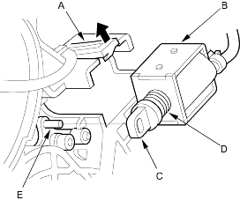

- Remove the shift assembly (see page 14-79).
- Remove the shift lock solenoid connector (2P), then disconnect the connector (see page 14-82).
- Remove the D3 switch wire from the hook. The wire routes over the shift lock solenoid.
- Pull the lock tab (A) up, then remove the shift lock solenoid (B).

- Install the shift lock solenoid plunger (C) and plunger spring (D) in the new shift lock solenoid.
- Apply silicone grease the inside of the slot on the shift lock solenoid plunger and tip of the shift lock/reverse lock stop.
- Install the shift lock solenoid by aligning the joint of the shift lock solenoid plunger with the tip (E) of the shift lock/reverse lock stop.
- Connect the shift lock solenoid connector (2P) and install it to the shift lever bracket base.
- Hook the D3 switch wire on its hook.
- Install the shift lever assembly (see page 14-80).